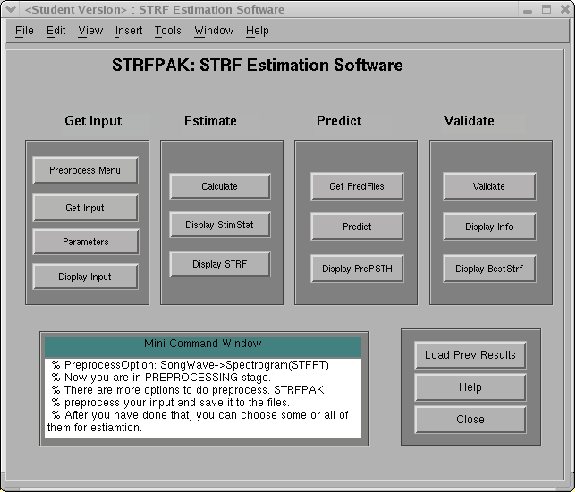

Next: Get Input
Up: User Manual
Previous: Getting Help
Contents
STRFPAK's main window, STRF Estimation Software,
that pops-up after clicking agreement to
the STRFPAK copyright window is shown in Figure 3.1.
In the window, the main functionalities of the STRFPAK toolbox are clearly
shown by its panels' labels: Get Input, Estimate, Predict,
and Validate.
For the first time usage, you need follow these four panels sequentially
to go through the complete procedure, which may not be necessary. For example, if you just want to load your data and display them
graphically, you can stop after the Get Input panel. But if you want to
see how good your data can predict the transfer function of the neurons,
you need go through the whole procedure from getting input to validating. A detailed description of each button on
every panel is given in the following sections.
Figure 3.1:
The Main Screen of STRFPAK
|
 |
2004-08-09